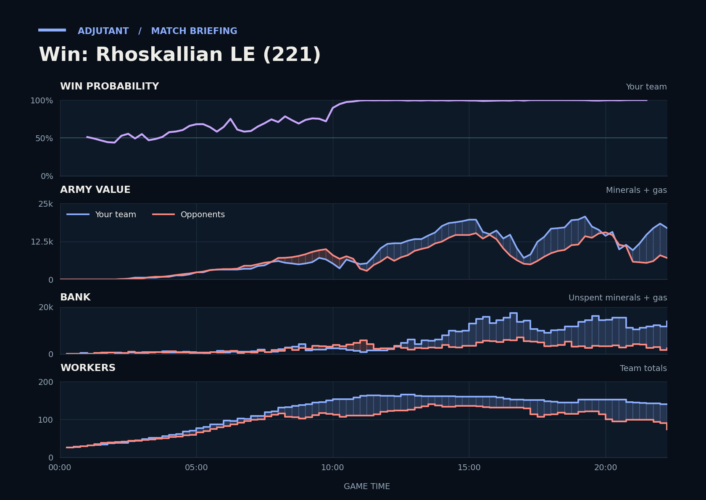

Win: Rhoskallian LE (221)
Provisional debrief. The full report (timeline, insights and analysis) is being generated.

Cached narration uses different analysis inputs (facts, engine notes, prompts or model settings). It has not been regenerated for this report.
**Win.** TakeTheTip's army went into the last fight at gazorp's fourth about four times gazorp's, and the duo finished with the larger army and worker count.
**Why**
- 3:30–5:00: You out-expanded them at even army value, and led in workers from 7:30.
- 9:14–11:10: Behind going in, the duo killed 12,500 of their army, and gazorp's army fell to its low.
- 22:05–22:15: TakeTheTip's army met a far smaller one, killed 24 Probes and the Nexus, and gazorp typed gg during it.
Current engine analysis: Win. Review 9:14–11:10: you won a fight (13,200 killed, 9,925 lost). The biggest fight came at 15:53–17:27 (16,075 lost, 18,150 killed).